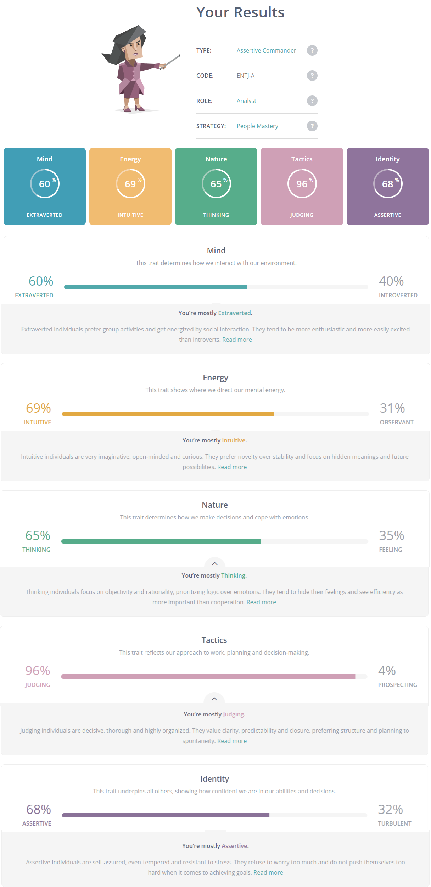
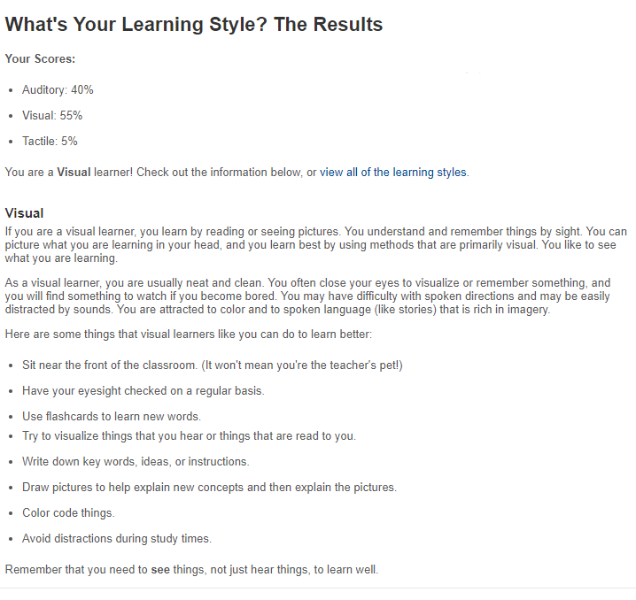
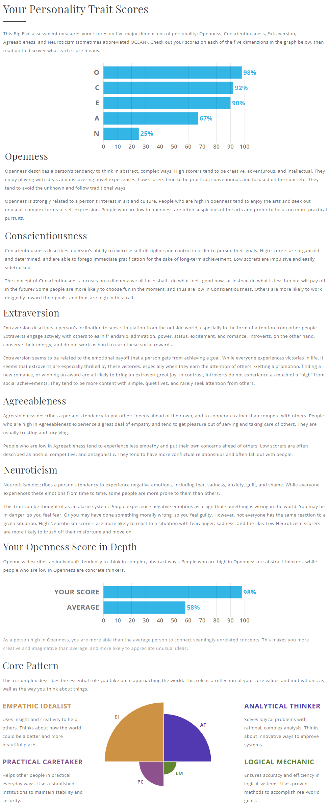

Personality Breakdowns
The Myers-Briggs Test
The Myers–Briggs Type Indicator is an introspective self-report questionnaire indicating differing psychological preferences in how people perceive the world and make decisions. The test attempts to assign four categories: introversion or extraversion, sensing or intuition, thinking or feeling, judging or perceiving.
Learning Type
Have you ever wondered why you do better in some classes than others? It may depend on your individual learning style. Your learning style influences the way you understand information and solve problems. There are three primary learning styles: Visual, Auditory and Tactile.Many people use a combination of learning styles, whereas others learn best by using just one.
As you can see from my results, I utilise a mixture of Auditory and Visual learning, with Tactile learning only making up a small portion of my learning style.
The Big Five Personality Test
The Big Five (also called Five Factor) model of personality is the most widely accepted personality theory in the scientific community. Although it is not as well understood among laypeople as systems like Myers-Briggs personality typing, it is generally believed to be the most scientifically sound way of conceptualizing the differences between people. The Big Five is so named because the model proposes that human personality can be measured along five major dimensions, each of which is distinct and independent from the others. The Big Five model is also sometimes called OCEAN or CANOE, both acronyms of the five traits. In the Big Five model, people are understood to have varying levels of key personality factors which drive our thoughts and behavior. Although personality traits cannot specifically predict behavior, differences in the Big Five factors help us to understand why people may react differently, behave differently, and see things differently from others in the same situation.
This is Something
Sed tristique purus vitae volutpat ultrices. Aliquam eu elit eget arcu commodo suscipit dolor nec nibh. Proin a ullamcorper elit, et sagittis turpis. Integer ut fermentum.
Also Something
Sed tristique purus vitae volutpat ultrices. Aliquam eu elit eget arcu commodo suscipit dolor nec nibh. Proin a ullamcorper elit, et sagittis turpis. Integer ut fermentum.
Probably Something
Sed tristique purus vitae volutpat ultrices. Aliquam eu elit eget arcu commodo suscipit dolor nec nibh. Proin a ullamcorper elit, et sagittis turpis. Integer ut fermentum.